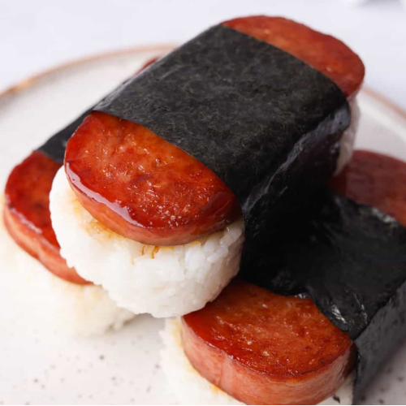

About
Upload
Search
Spam Musubi

Recipe from Matthew C. Paraiso
Ingredients
Ingredient
Measurement
Spam
1-2 Slices
Soy Sauce
3 tbsp
Mirin
2 tbsp
Sugar
1 tbsp (for a sweet flavor)
Rice (Regular, Sticky, Sushi)
1-2 cups
Nori (Seaweed)
1 Sheet
Instructions
Glaze the Spam: In a small bowl, combine the soy sauce, mirin, and sugar, stirring until the sugar dissolves. Heat a skillet over medium heat and cook the Spam slices until golden and crispy on both sides (about 2-3 minutes per side). Pour the glaze over the Spam and cook for another 1-2 minutes, allowing the sauce to thicken and coat the Spam evenly.
Assemble the Musubi Using the Can: Remove the lid from the empty Spam can and line it with plastic wrap (this step is optional but helps with easy removal). Place the warm sushi rice into the can, pressing it down firmly to form a solid base layer. Then, place a slice of the glazed Spam on top of the rice and gently press it down to secure it.
Wrap with Nori: Carefully remove the rice and Spam from the can, keeping the shape intact. Place a sheet of nori around the rice and Spam, sealing it by moistening the edge of the nori with a little water.
Optional: Slice the musubi into bite-sized pieces and enjoy!